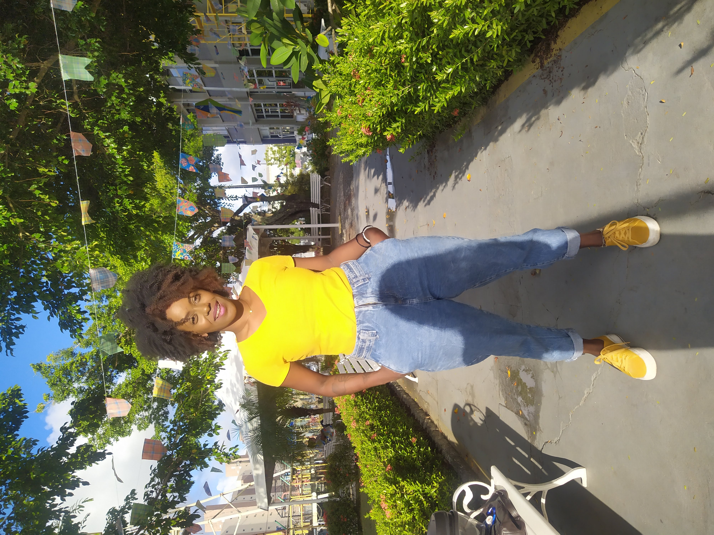

Débora Nask
Desenvolvedora Front-end
Sou pedagoga, apaixonada por educação profissional e que decidi por me dedicar por uma antiga paixão, a programação, afinal grandes amores nunca morrem né?
Apenas precisam de tempo para se tornarem mais sólidos.
Neste novo momento novos desafios são colocados diante de mim, mas permaneço focada em vencer cada um e me tornar uma profissional maior e mais completa;